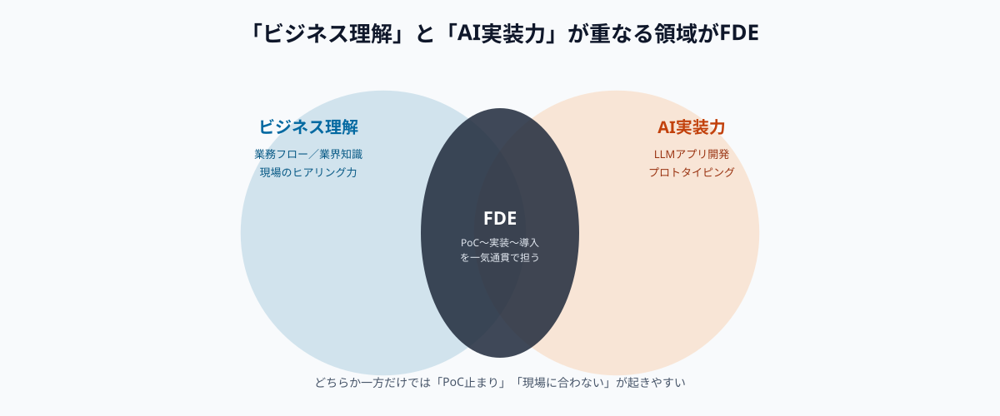
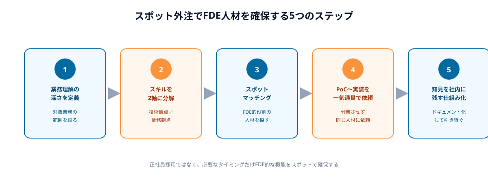

「AIでPoCは作れたが、そこから実際の業務に組み込むところで止まってしまう」——多くの企業がAI導入で直面するこの壁を突破するために、2026年に入って急速に注目を集めているのがFDE（フォワード・デプロイド・エンジニア／Forward Deployed Engineer）という新しい職種です。
この記事では、FDEとは何か、なぜ今このポジションが急増しているのか、そして正社員採用が難しいFDE的な役割を、スポット外注でどう確保すればよいかを解説します。
FDE（フォワード・デプロイド・エンジニア）とは何か
FDEとは、顧客企業の現場に深く入り込み、業務理解とAI技術の実装力を掛け合わせて課題を直接解決するエンジニアを指す職種です。元々はPalantirが体系化した働き方として知られていましたが、生成AIの普及にともない、OpenAIやAnthropicをはじめとする主要AI企業がこの職種を相次いで立ち上げ、2026年には急速に一般的な肩書きとなりました。
一般的なソフトウェアエンジニアが社内でプロダクトを開発するのに対し、FDEはクライアント企業の業務フローを理解した上で、その場でAIユースケースを設計し、実際に使えるアプリケーションとして実装し、業務への導入まで完結させる役割を担います。「AI導入の最後の1マイルを埋める存在」と表現されることもあります。
なぜ今、FDEが急速に注目されているのか
FDEが注目される最大の理由は、「技術力」と「業務理解力」のどちらか一方だけではAI導入が現場で機能しないという事実が、各企業のAI活用が進むにつれて明らかになってきたことです。技術だけに強いエンジニアはPoCまでは作れても現場の業務フローに馴染ませられず、業務理解だけに強いコンサルタントは要件は整理できても実装にたどり着けない、というギャップが多くの企業で起きていました。

海外の調査では、2026年に入りFDEの求人が前年からほぼゼロの状態から急増しており、Palantir・OpenAI・Databricks・Mistral・Cohereなど主要AI企業が軒並みこの職種の採用を強化していると報じられています。日本国内でも2026年春時点で日系・外資系を合わせて30件以上のFDE求人が公開されているとされ、エンジニア・コンサルタント・PdMいずれの出身者からも転職可能な職種として認知が広がっています。
発注者にとってFDEが重要な3つの理由
FDEという肩書きそのものよりも重要なのは、この役割が担っている機能を自社のAI導入にどう取り入れるかです。発注者の立場から見ると、次の3点が特に重要になります。
①PoC止まりを解消できる
業務理解とAI実装を一人（または一つのチーム）が担うことで、「PoCは動くが本番導入できない」という分断が起きにくくなります。要件定義から実装までの間で情報が失われることがなく、現場の細かい例外処理にも対応しやすくなります。
②導入スピードが速い
コンサルタントが要件を整理し、別チームが実装するという分業体制では、引き継ぎのたびに時間がかかります。業務理解と実装を同じ人材が担うことで、要件のすり合わせから実装までのサイクルが大幅に短縮されます。
③業務理解込みで実装できる
マニュアル化されていない現場の運用ルールや例外処理は、ヒアリングだけでは正確に拾いきれないことが多くあります。現場に入り込みながら実装することで、仕様書に書かれていない「実際の業務の動き」を踏まえたAIツールを作れる点が大きな利点です。
一方で、FDEの平均年収は海外データで2,000万円台後半〜3,000万円台に達するとされ、社内に正社員としてFDE人材を確保するのは、コスト面・採用難易度の両方で中小企業にとって現実的ではありません。だからこそ、必要なタイミングだけFDE的な役割をスポットで確保する発想が重要になります。
スポット外注でFDE人材を確保する5ステップ
FDEという肩書きを持つ人材を正社員として採用するのではなく、FDEが担っている「業務理解×AI実装」の機能だけをスポットで確保する場合、次の5ステップで進めるのが現実的です。
STEP1｜自社に必要な「業務理解の深さ」を定義する
どの業務プロセスについて、どこまで深く理解した上でAIを実装してほしいかを先に定義します。「経理の請求書処理フロー全体」のように対象範囲を具体的に絞ることで、依頼する人材に求めるスキルの輪郭がはっきりします。

STEP2｜必要スキルを技術観点と業務観点に分解する
「LLMアプリ開発の経験」「業界特有の業務知識」「ヒアリングから要件を組み立てる力」など、求めるスキルを技術面と業務面に分けて整理します。両方を完璧に満たす人材を探すのではなく、不足する側をスポット外注で補う発想が現実的です。
STEP3｜スポットマッチングでFDE的役割の人材を探す
メガベンチャー所属やAI開発の実務経験を持つ副業・フリーランスエンジニアの中には、業務理解と実装の両方をこなせる人材が一定数存在します。正社員採用ではなく、スポット・週末稼働の形でこうした人材にアクセスすることで、固定費をかけずに同等の機能を確保できます。
STEP4｜PoCから実装まで一気通貫で依頼する
PoC担当と本番実装担当を分業させず、同じ人材（またはチーム）に最初のヒアリングから実装・社内導入までを一貫して依頼します。引き継ぎのたびに情報が失われることを防ぎ、現場の例外処理まで踏まえた実装にたどり着きやすくなります。
STEP5｜得られた知見を社内に残す仕組みを作る
スポット稼働は一時的な関わりになるため、実装の経緯・業務フローの整理結果・運用ルールをドキュメント化し、契約終了後も社内で参照できる状態にしておくことが欠かせません。次にスポット依頼する際の引き継ぎコストも下げられます。
よくある失敗と対策
FDE的な人材活用は仕組みとしては難しくありませんが、導入がうまくいかない企業にはいくつか共通点があります。
- 「技術力が高ければ業務理解は後からでもよい」と考えてしまう：実装力だけを基準に人選すると、現場の例外処理を踏まえないツールができ、結局使われなくなる
- 業務理解の対象範囲を決めずに依頼する：「全社のAI活用」のように範囲が広すぎると、深い業務理解にたどり着く前に稼働時間が尽きてしまう
- PoCと本番実装を別人材に分業させてしまう：引き継ぎの過程で要件の細部が失われ、PoC止まりの状態に逆戻りしてしまう
💡 FDE人材活用を成功させるコツ
「とにかく優秀な人を採用する」のではなく、「どの業務範囲を、どこまで深く理解した上で実装してほしいか」を先に決めることが、スポット外注でFDE的な機能を確保する際の最大のポイントです。
正社員採用・人材紹介・スポット外注、どちらが向いているか
FDE的な機能を確保する方法は、大きく3つに分かれます。正社員としてFDE人材を採用する方法、人材紹介会社を通じて契約社員・業務委託で確保する方法、そして必要なプロジェクト単位でスポット外注として依頼する方法です。
正社員採用は長期的に社内にノウハウが蓄積される一方、年収水準の高さと採用難易度の高さから、特に中小企業にとっては実現が難しいのが実情です。人材紹介は一定の即効性がありますが、月単位の契約が前提となることが多く、スポットでの稼働には向きません。
そのため、「このプロジェクトのこの範囲だけ、業務理解込みでAI実装してほしい」という単位でスポット外注に切り出す方法が、固定費をかけずにFDE的な機能を取り入れる現実的な選択肢になります。週末や隙間時間で対応できるエンジニアとマッチングすることで、必要なタイミングだけ確保することが可能です。
🔧 「業務理解込みでAIを実装してほしい」企業様へ
ANKENでは、業務フローのヒアリングからAIユースケース設計、実装・社内導入までを一気通貫でスポット依頼することも可能です。固定費ゼロ・週末対応のエンジニアとマッチングできます。
よくある質問
- Q. FDE（フォワード・デプロイド・エンジニア）とは何ですか？
- A. AI導入の現場に入り込み、要件整理から実装まで一貫して担う新しいエンジニア職種です。
- Q. なぜ今FDEが注目されていますか？
- A. AI導入企業が増える一方、実装を最後までやり切れる人材が不足しているためです。
- Q. FDE人材を正社員採用する以外の方法はありますか？
- A. あります。スポット外注で必要なタイミングだけFDE的な役割を担うエンジニアに依頼する方法です。
まとめ・ANKENへのご相談
FDE（フォワード・デプロイド・エンジニア）は、「業務理解」と「AI実装力」を兼ね備え、PoC止まりを解消する存在として2026年に急速に普及した職種です。正社員として確保するにはコスト・採用難易度の両面で高いハードルがありますが、機能単位でスポット外注に切り出せば、固定費をかけずに同等の効果を得ることができます。
ANKENでは、業務理解からAI実装までを一気通貫で担えるエンジニアとのスポットマッチングに対応しています。「PoCで止まっている」「現場に合わないツールができてしまった」という企業様は、お気軽にご相談ください。
業務理解からAI実装・導入までを一気通貫で、固定費ゼロ・週末スポットから依頼可能です。
👉 無料でスポット依頼を相談する初回相談は無料です。要件が固まっていなくてもOKです。